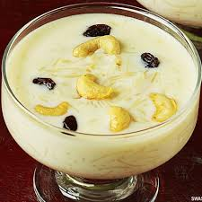

🍮 Payasam Recipe

Ingredients
- 1/2 cup rice or vermicelli
- 1 liter full-fat milk
- 1/2 cup jaggery or sugar (adjust to taste)
- 2 tbsp ghee
- 10-12 cashews
- 8-10 raisins
- 1/4 tsp cardamom powder
Instructions
- Heat ghee in a pan and roast cashews and raisins. Set aside.
- Add rice or vermicelli and roast lightly.
- Pour milk and cook until the rice/vermicelli is soft.
- Add jaggery or sugar and stir until dissolved.
- Add cardamom powder, cashews, and raisins. Mix well.
- Serve warm or chilled.
Serve With
- As a dessert after South Indian meal
- Festive Thali
- Banana Leaf Meal
🍯 Tip: Use coconut milk instead of dairy milk for a vegan twist.